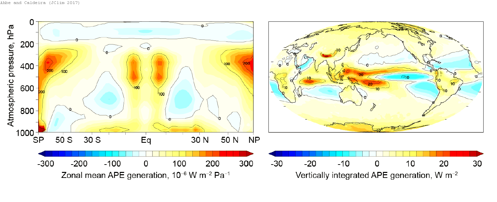

Eva Ahbe and I wanted to know where the energy came from to make winds.
This is infeasible to directly observe in the global atmosphere. Therefore, we used a model of the atmosphere to study where the energy comes from to drive winds.

The potential energy available to generate winds is created most strongly high above the tropical western Pacific Ocean where the condensation of water in convective systems heats up already warm air, and also in the high polar night where heat radiates to space, cooling already cold air.
These heat fluxes create density contrasts that tend to make the tropical air rise and the polar air sink, and this is a primary driver of global winds.
Where to read more
- The publication this post is about: Spatial distribution of generation of Lorenz's available potential energy in a global climate model (Ahbe and Caldeira, 2017 · Journal of Climate)
- Published article (doi:10.1175/JCLI-D-15-0614.1)
- How much wind power can the atmosphere actually supply?